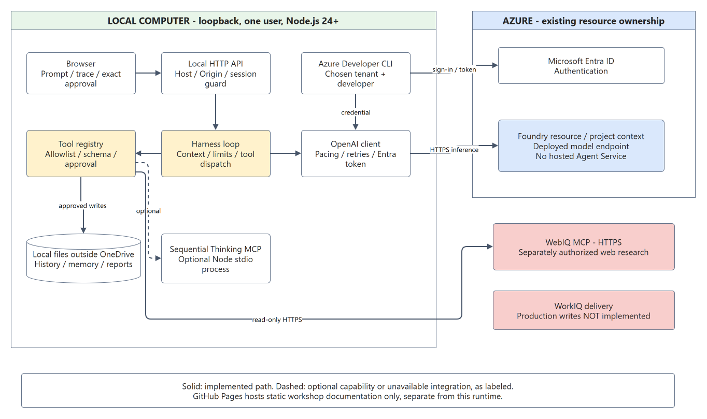

Workshop: Understanding the Agent Harness
Build and inspect a local travel-planning agent that uses real Microsoft Foundry inference. This is a Windows / Node.js 24 workshop, not an offline demo and not a cloud-hosted Agent Service deployment.
Audience: developers and solution architects. Duration: 150 minutes, with an optional 60-minute L400 extension. Reviewed: 15 September 2026. The public source is ibranibeny/agent-harness-workshop.
1. Learning Outcomes
By the end, you should be able to explain why an agent needs a loop, distinguish a model's proposal from permission to act, trace a real MCP result back to its call, continue a conversation without re-executing old actions, and identify the boundary between a local lab and an Azure landing zone.
| Time | Exercise | Observable outcome |
|---|---|---|
| 0-20 min | Overview and architecture | Explain model, harness, tools, state and approval |
| 20-50 min | Clone, configure, test and start | Local dashboard and verified developer identity |
| 50-75 min | Direct destination and weather research | WebIQ observations and cited, date-aware answer |
| 75-105 min | Itinerary, continuation and approval | Exact PDF proposal; deny or explicitly approve |
| 105-125 min | Memory, limits and trace | Distinguish preference memory from conversation history |
| 125-150 min | Landing zone and debrief | Name production gaps and responsible teams |
2. Overview: Model, Agent, Harness And MCP
An LLM generates text and structured tool-call proposals. An agent combines model decisions with capabilities and state. The harness is the application code around the model: it assembles context, advertises allowed tools, validates arguments, runs approved actions, returns observations, persists evidence and stops execution at configured limits.
Microsoft Learn recommends starting with the lowest sufficient orchestration complexity. A single agent with multiple tools often solves a cohesive problem without the latency and coordination cost of multiple agents. This lab implements that pattern in JavaScript. It does not use the Microsoft Agent Framework SDK; the Learn concepts guide its design, not its package selection. See AI agent orchestration patterns.
Model Context Protocol (MCP) standardizes communication with tool servers. It does not decide whether a tool is safe, whether the caller has permission, or whether returned content is true. The harness retains those responsibilities. Read MCP and AI agents.
| Element | Job in this lab | What it is not |
|---|---|---|
| Foundry model | Choose calls, interpret observations, answer | A local executor or approval authority |
| Node harness loop | Dispatch, limits, cancellation, context | A second LLM |
| WebIQ MCP | External web research | A guaranteed exact-date forecast |
| Sequential Thinking MCP | Optional public plan/status record | Web search, private chain-of-thought, or a prerequisite |
| Conversation history | Retain earlier messages and paired observations | Permission to replay a previous action |
| Preference memory | Store explicitly approved reusable preferences | A transcript, vector store or automatic summarizer |
| Human approval | Authorize one exact prepared write | Blanket permission from chat text |
3. Scenario: A Singapore Museum Weekend
The traveler wants a relaxed two-day visit, source-backed attractions, weather appropriate to the travel dates, and an itinerary PDF. Email and calendar are later integration exercises, not working production connectors in this lab.
Use nonsensitive workshop data. The sample dates are 19-20 September 2026 in Asia/Singapore; change them when running the workshop later. A search result's existence does not establish a forecast for those dates. When no reliable dated forecast is available, the answer must say so and distinguish seasonal climate from forecast evidence.
Current Lab Architecture

Download the editable three-page draw.io file. Page 1 is the actual application design; page 2 is an undeployed landing-zone reference; page 3 is the execution flow.
| Component | Location and role | Required for this lab? |
|---|---|---|
| Browser, HTTP API, harness, PDFKit | Local computer; loopback listener | Yes |
| Microsoft Entra ID | Azure developer authentication; selected tenant/account | Yes |
| Azure subscription and resource group | Resource ownership and management boundary | Existing resources only |
| Microsoft Foundry resource | Hosts a compatible deployed model | Yes |
| Foundry project | Organizes AI development; the code uses the parent resource's model endpoint | Existing project context; not a hosted-agent runtime |
| Model deployment | Chat Completions with strict function tools | Yes; deployment name is not the model family name |
| WebIQ MCP | Remote service reached over HTTPS | Required for travel research; separately authorized access |
| Sequential Thinking MCP | Local Node subprocess, started only if selected | Optional |
| JSON memory, traces, reports | Local application data directory outside OneDrive | Yes; not application-encrypted |
| WorkIQ / Microsoft 365 | Planned delivery boundary | Unavailable; no working email/calendar writes |
| App Service, VNet, Firewall, Private Link | Possible production design components | Not provisioned by this workshop |
Azure Landing Zone Reference

An Azure landing zone is an organizational foundation, not simply a resource group. The platform landing zone provides shared identity, governance, connectivity and management. Application landing zones host workload resources within those guardrails. See What is an Azure landing zone? and the Foundry landing-zone reference architecture.
For an enterprise extension, agree management-group placement, subscription ownership, region and residency, least-privilege RBAC, quotas and budgets first. A platform team can own hub connectivity, VPN/ExpressRoute, Firewall and private DNS. A workload team owns the Foundry resource, application configuration, tool contracts and data lifecycle. Private-endpoint DNS and a routed path are required before a local computer can use a private Foundry endpoint. Allowlisted external MCP traffic still needs an approved egress path.
This workshop does not deploy that architecture. It does not include App Service authentication, managed-identity hosting, centralized logs, durable distributed state, or Private Link. The Microsoft baseline includes hosted Agent Service and other dependencies; those are not prerequisites for this custom local model client. Do not provision every box merely to run the lab.
4. The Agentic Workflow

- The user submits a goal, step limit and memory setting. A reply can reference a completed parent run.
- The server restores bounded, validated conversation history. The current system instructions are always first.
- The harness sends messages and all enabled tool definitions to the real Foundry model. Planning is optional from the first iteration.
- The model proposes a tool call or returns a final answer. A proposed
nextStepinside a plan does not execute that step. - The registry checks the allowlist and strict local schemas. Read-only research goes to the configured WebIQ MCP
weboperation. - A write proposal is prepared and paused for exact human approval. Denial produces a tool observation without the write.
- The result or error is appended with the original
tool_call_id. The next model call sees what actually happened. - A nonempty final message ends the run, or a step/token/time/cancellation limit stops it. Trace replay never runs tools.
The loop is necessary because the model cannot interpret a tool result before the application obtains it. A tool call therefore commonly requires another model call. The loop is not an invitation to run indefinitely.
5. Local Deployment: Clone To Running App
Step 0: Prepare The Computer
Required: Windows PowerShell, Git, Node.js 24+, npm, Azure Developer CLI (azd), a browser and access to an existing compatible Foundry deployment. GitHub CLI is needed only to publish, not to participate. The commands use neither Python nor the Azure CLI az.
node --version
npm.cmd --version
git --version
Get-Command azd
Ask the instructor for your permitted tenant, user account, resource endpoint, deployment name and observed RPM/TPM limits. The instructor must arrange inference permissions and sufficient quota ahead of time. This repository does not create resources or assign roles. WebIQ access is a separate prerequisite; do not assume it is a generally available public service.
Step 1: Clone The Public Source
$labRoot = Join-Path $env:LOCALAPPDATA 'AgentHarnessWorkshopSource'
New-Item -ItemType Directory -Force $labRoot | Out-Null
Set-Location $labRoot
git clone https://github.com/ibranibeny/agent-harness-workshop.git
Set-Location agent-harness-workshop
git rev-parse --short HEAD
Check: the clone has package.json, package-lock.json, src, public, tests and docs. Use a new directory if the destination already exists; do not overwrite another clone. Record the revision in your workshop notes.
Step 2: Install The Locked Dependencies
npm.cmd ci --ignore-scripts
Check: exit code 0 and installed dependencies. This command uses the committed lockfile and does not execute package lifecycle scripts. Do not replace it with an unpinned upgrade during the workshop.
Step 3: Configure Your Own Deployment
Copy-Item .env.example .env
notepad.exe .env
Set these values in the local file, using values supplied by the instructor:
FOUNDRY_TENANT_ID=YOUR-TENANT-GUID
FOUNDRY_ACCOUNT=YOUR-ALLOWED-SIGN-IN-ACCOUNT
FOUNDRY_BASE_URL=https://YOUR-RESOURCE.openai.azure.com/openai/v1/
FOUNDRY_DEPLOYMENT=YOUR-DEPLOYMENT-NAME
FOUNDRY_RPM=50
FOUNDRY_TPM=50000
PORT=4317
RPM/TPM above are example values, not capacity reservations or a promise of availability. Replace them with your deployment's limits. The public client validates the commercial Azure OpenAI endpoint form shown here; other clouds and endpoint families require a deliberate adapter change. Never put an API key into this file for Foundry: the application uses Entra authentication. Do not paste passwords or tokens into chat.
node --env-file=.env --input-type=module -e "import { validateConfiguration } from './src/config.mjs'; validateConfiguration(); console.log('Configuration valid; values not printed.');"
git check-ignore .env
Check: configuration validation succeeds and .env is ignored. This is syntax/configuration validation, not a resource existence, permission or inference check.
For WebIQ, arrange an authorized WebIQ-MCP server entry in the VS Code user MCP configuration through your instructor. The connector expects https://api.microsoft.ai/v3/mcp, a server-side x-apikey, and the web tool. Never commit that configuration. Missing access fails explicitly; there is no mock provider fallback.
Step 4: Authenticate And Run Doctor
Sign in yourself in the browser, selecting the account and tenant configured above:
azd auth login --tenant-id YOUR-TENANT-GUID
npm.cmd run doctor
Check: doctor reports identity_verified for your configured tenant and account. Its output contains identity and endpoint metadata: do not publish it unredacted. The screenshot evidence uses an existing authorized session rather than re-enacting sign-in. Doctor obtains an Entra token and checks identity; it does not call the LLM or prove inference permission.
Step 5: Run The Deterministic Tests
npm.cmd test
Check: all tests pass. These tests use temporary files, real local Sequential Thinking MCP where applicable, and controlled model/connector objects for deterministic boundaries. They are not evidence of live Foundry or WebIQ availability.
The optional additional smoke test makes billable real Foundry calls:
npm.cmd run test:live
Check: a local arithmetic tool returns 42 and the real model uses the observation. It tests inference and tool continuation, not travel-source quality or email delivery.
Step 6: Start The Local Server
npm.cmd start
Open the loopback URL printed by the server, normally http://127.0.0.1:4317. If occupied, the server tries the next port. An absent .env message is harmless only when configuration was supplied through environment variables; a missing configuration will fail authentication explicitly.
Check: the dashboard loads and Runtime shows planning as optional. The exported copy uses %LOCALAPPDATA%\AgentHarnessWorkshop for runtime data by default. HARNESS_DATA_DIR can select another local directory. Never run two servers against the same runtime directory. Stop your own server with Ctrl+C; do not expose its port beyond loopback.
Screenshot Evidence
The execution evidence section contains screenshots for prerequisite checks, clone, install, configuration, doctor, tests, startup and the application workflow. Command screenshots are an evidence viewer rendering captured process output, not screenshots of a simulated terminal. Identity values and user paths are redacted. Every capture states what it proves and what it does not prove.
6. Lab A: Direct Research
Start New conversation, turn preference memory off, and submit:
Find two museums in Singapore using official sources. Use WebIQ destination research and cite the URLs. Keep the answer short. Do not export, save preferences, email or create calendar events.
Inspect the first model_request. search_destination and search_weather should already be available and planningRequired should be false. Simple research can reach WebIQ directly; planning remains a model choice, not a required gate.
Then ask about weather with explicit dates. Confirm the actual search_weather arguments and inspect whether the sources cover those dates. Do not treat forecastVerified: false as a verified forecast. Look for source timestamps, geographical coverage and honest uncertainty.
Pass: a real WebIQ observation and an answer grounded in its URLs. Not enough: a fluent answer, a tool_call event without a result, or a planning summary saying research was performed.
7. Lab B: Itinerary And Approval
Start a new conversation with the travel preset, edit the dates and request a concise itinerary. Inspect destination/weather observations before trusting the draft. A full itinerary may use optional planning and multiple iterations.
For a completed draft, send a reply in the same conversation:
Use the reviewed itinerary already in this conversation. Submit it to export_itinerary_pdf for the exact approval preview. Do not research again, save preferences, email or create calendar events.
Review the proposed dates, time zone, daily plan, weather caveat and sources. The model must actually call export_itinerary_pdf before an approval panel exists. Text saying "I can export after approval" is not itself a pending tool request.
Choose Deny first. Confirm a denied observation and no new PDF. For a new proposal, the participant may choose Approve after review. Only a successful saved: true result, file bytes and SHA-256 support a claim that the PDF was written. The Itinerary PDF link appears after a successful write.
Each proposal needs its own decision. Chat text saying "approved" and earlier approvals do not authorize a new call. Approval is not a guarantee that travel facts are correct. See Microsoft Learn tool approval.
8. Lab C: Memory, History And Limits
Use the preference-memory scenario to propose a nonsensitive preference, such as "prefer museums and public transport." Inspect and approve the exact memory write yourself. In a new conversation, allow memory and ask for a plan consistent with that preference.
Conversation history restores a prior draft and paired observations when replying to a completed run. Preference memory stores selected reusable facts. Planning state records public updates within one execution. These are three different mechanisms. A new conversation does not inherit the previous transcript. Disabling preference memory does not erase conversation history. See Microsoft Learn sessions.
Repeat a read-only task with max steps set to 1. A tool result may be captured but no model turn remains to interpret it. limited is not the same as a completed answer. The default cumulative soft token budget is 100,000; it is not a context-window limit or tokens-per-minute quota.
9. Troubleshooting
| Symptom | What to inspect | Safe next action |
|---|---|---|
| Configuration error | .env presence and required values |
Correct local metadata; never paste secrets |
| Wrong identity / tenant | Doctor output versus your chosen account | Sign in yourself to the configured tenant |
| 401 / 403 from Foundry | Endpoint, data-plane permission, selected tenant | Ask the resource owner; do not grant yourself broad roles |
| WebIQ unavailable | Authorized server config and actual MCP result | Resolve access with the instructor; no synthetic research |
| 429 or quota pacing | Request size, RPM/TPM and concurrent users | Reduce context/output or coordinate workshop capacity |
| Tool loop stops early | Steps, tokens, timeout and last observation | Correct the task or start a bounded new run |
| No approval panel | Was a write tool actually proposed? | Reply to the completed draft and request the preview |
| Follow-up lacks draft | Selected parent is completed and history fits limits | Use the right completed run; new conversation is isolated |
| Server restarted during approval | Run marked interrupted | Start a new proposal; do not replay old permission |
| Email/calendar unavailable | No production write connector | Keep the PDF local; do not claim delivery |
10. Exit Criteria And Cleanup
You can explain one real trace from request through observation and answer, distinguish recorded evidence from intent, deny an action without a write, and identify which landing-zone components are only recommendations. Read the L400 guide for protocol and production tradeoffs.
Stop your lab process. Keep or delete your own local runtime according to your organization's retention policy; it contains prompts and tool results. Do not delete another participant's runtime. No Azure resources were provisioned by these steps, so there is no infrastructure teardown command. Inference usage already incurred remains billable.
Execution Evidence
Fresh public-clone verification. These images distinguish real command output from real browser captures. Configuration and identity metadata are redacted; no sign-in or successful write is fabricated.